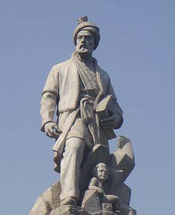
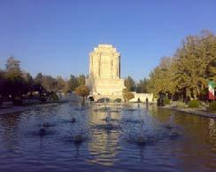

Dars-e 19 — Alāqe be musiqi
Matn ♫ Alāqe be musiqi
Az zamān‐i ke Sārā bā Bahrām āšnā šod, alāqe‐ye bištar‐i be musiqi‐ye asil‐e irāni peydā kard. Bahrām navāzandegi rā az kudaki āqāz kard, hamān towr‐i ke pedar‐aš dar kudaki musiqi rā nazd‐e yek ostād‐e bozorg yād gerefte bud. Pedar‐e Bahrām u rā hamiše be konsert‐e navāzandegān‐o xānandegān‐e mašhur mibord, cerāke mixāst Bahrām rā behtar bā musiqi āšnā konad. Bahrām conān taht‐e ta’sir‐e ān musiqidānān qarār gereft, ke dar senn‐e davāzdahsālegi be candin sāz tasallot dāšt. Sārā tasmim dārad, ke nazd‐e Bahrām āmuzeš bebinad, dar surat‐i ke aqlab‐e dustān‐e u musiqi‐ye pāp rā bištar mipasandand.
Pāsox bedeh!
1. Sārā az key be musiqi‐ye asil‐e irāni bištar alāqemand šod?
2. Bahrām az key navāzandegi rā šoru’ kard?
3. Pedar‐e Bahrām u rā dar kudaki kojā mibord?
4. Cerā in kār rā mikard?
5. Bahrām dar davāzdahsālegi tā ce hadd‐i pišraft karde bud?
6. Sārā ce tasmim‐i gerefte‐ast?
Sāxtār Alāqe be musiqi
Irān‐o irāni Ferdowsi
Goftogu Hazine-ye post-eš ceqad miše?
Sāxtār
Ebārathā‐ye qeydi
| Kārbord | Horuf/ebārathā‐ye rabt | Nemune |
| gunāgun | ke | Farid ke āmad, hame sāket šodand. |
| vaqt/hengām/zamān/mowqe‐i ke | Vaqt‐i ke u rā didam, zowqzade šodam. | |
| pas/ba’d az in ke | Pas az in ke u sohbat kard, hame rāzi šodand. | |
| piš/qabl az ān ke | Piš az ān ke soxan beguyi, kam‐i fekr kon! | |
| zamān | harvaqt – hargāh | Harvaqt u miāyad, xošhāl mišavam. |
| con | Con be mā resid, sāket šod. | |
| tā | Tā mā rā did, digar harf nazad. | |
| az vaqt/hengām/zamān/mowqe‐i ke | Az vaqt‐i ke in qors rā xordam, kamar‐am behtar šod. | |
| dalil | con – conke – zirā – zirāke – barā‐ye in ke | Be xāne raftam, con xaste budam. |
| az ānjā(‐yi) ke – az in jahat ke – be ellat‐e in ke | Az ānjā ke u rā nemišenāsam, be u e’temād nadāram. | |
| qiyās | hamān towr‐i ke – be towr‐i ke – conānke | Xašmgin šod, hamān towr‐i ke pedar‐aš šode bud. |
| peydarpey | conān … ke – be towr‐i … ke | Conān faryād zad, ke hesābi tarsidam. |
| tanāqoz | dar surat/hāl‐i ke | Mā hame gušt mixorim, dar surat‐i ke u giyāhxār‐ast. |
| hadaf | tā | Barā‐yat ta’rif mikonam, tā ebrat begiri. |
| dalil‐e nākāfi | agarce – bā in ke – harcand – bā vojud‐i ke | Agarce xaste bud, vali tā sobh kenār‐aš bidār mānd. |
Nokte
- Besyār‐i az ebārathā‐ye qeydi vāže‐ye ke rā dar bar migirand. Ma’mulan vāže‐ye piš az ke kārbord rā mošaxxas mikonad. Agar ke tanhā bāšad, kārbord tanhā az ma’ni‐ye jomle mošaxxas mišavad. - Dar ebārathā‐ye qeydi gāh‐i az ke cešmpuši mišavad: Vaqt‐i (ke) Mahnāz āmad, hame sāket šodand.
Bā estefāde az vāžehā/ebārathā‐ye zir jomlehā‐ye zir rā be ham vasl kon!
keconān … ketāaz vaqt‐i kedar hāl‐i keaz ānjā kezirconvaqt‐i keharvaqtbā in keba’d az in ke
ā
- Mosābeqe‐ye futbāl šoru’ šod. Be man telefon kon! Mosābeqe‐ye futbāl ke šoru’ šod, be man telefon kon! 2. Mahnāz xeyl‐i xaste bud. Tā sobh kār kard.
__
- Bā lagad mohkam dar rā bast. Dar šekast.
__
- Vāzeh nemibinam. Az zarrebin estefāde mikonam.
__
- Emšab be jašn‐e tavallod‐am nemiāyad. Bimār‐ast.
__
- U rā tā konun nadide‐am. Be u etminān nadāram.
__
- Be jazire residim. Az kešti piyāde šodim.
__
- Ān film rā didam. Digar nemitavānam bexābam.
__
- Qāblame‐vo māhitābe rā az ru‐ye ojāq bar dāšti. Ojāq rā xāmuš nakardi.
__
- Barā‐yat towzih mideham. Dobāre eštebāh nakoni.
__
- Mā hame gerye mikardim. U mixandid.
__
- In dusti fāyede‐i nadārad. Dust bāyad dar qam‐o šādi‐ye ādam šarik bāšad.
__
Irān‐o irāni – Ferdowsi
Bas‐i ranj bordam dar in sāl siAjam zende kardam bed‐in pārsi
In beyt‐e ma’ruf az Ferdowsi, sorāyande‐ye hamāse‐ye melli‐ye irāniyān, Šāhnāme,‐ast. Ferdowsi biš az hezār sāl‐e piš dar Tus be donyā āmad. Si sāl tul kešid tā Šāhnāme, in šāhkār‐e adabi, rā sorud. Sisad sāl pas az ān ke Arabhā Irān rā fath kardand, u bā
sorudan‐e Šāhnāme zabān‐e pārsi rā zende kard. Kamābiš hame‐ye vāžehā‐ye bekārrafte dar Šāhnāme pārsi‐ye sare hastand. Mardomān‐e kešvarhā‐ye digar‐i ke Arabhā fath kardand, emruze be zabān‐e arabi soxan miguyand.
Šāhnāme gozaštehā‐vo afsānehā‐ye kohan‐e Irān rā dar qāleb‐e še’r be tasvir mikešad. Dahhā šaxsiyat‐e tārixi, nimetārixi va afsānei, ce zan‐o ce mard, dar ān naqš bāzi mikonand, tā farhang‐ e irāni rā jāvidān konand. Šāhnāme dārā‐ye 62 dāstān, 990 fasl va kamābiš 60,000 beyt‐ast. Az miyān‐e dāstānhā‐ye Šāhnāme mitavānim az Kāve‐ye Āhangar, Rostam‐o Sohrāb, Rostam‐o Afrāsiyāb, Siāyvaš‐o Sudābe va niz dāstānhā‐ye āšeqāne‐ye Zāl‐o Rudābe va Bižan‐o Maniže nām bebarim. Tarjome‐ye Šāhnāme va dāstānhā‐ye ān be zabānhā‐ye gunāgun‐e donyā vojud dārad. Ferdowsi dar haštādsālegi dar gozašt. Irāniyān hamvāre sepāsgozār‐o vāmdār‐e u hastand.
Nokte
- “Sāl si” ya’ni “si sāl”. - Arabhā pas az fath‐e Irān be irāniyān Ajam migoftand. - Bed *gune‐ye adabi‐ye be‐ast, ke bištar dar tarkib bā in, ān va u *be kār miravad. - “Sare” ya’ni “be dun‐e vāžehā‐ye bigāne”.
| vazn‐eš | vazn‐aš |
| punsad | pānsad |
| Toman | Tumān |
| āddi | ādi |
| mikeše | mikešad |
| hazina‐š | hazine‐aš |
| šiš | šeš |
| xob | xub |
| nešuni | nešāni |
| giranda ro | girande rā |
| ru‐š | ru‐yaš |
| benevisin | benevisid |
| form‐am | form rā ham |
| konin | konid |
| cašm | be ru‐ye cešm |
Ebārathā/vāžehā
Aks – peste – ājil – kādo – lebās
Pāris – Rom
Bā estefāde az ebārathā/vāžehā goftogu‐ye bālā rā bā hamkelāsi‐yat tamrin kon! Goftogu‐ye behamrixte rā morattab kon va be zabān‐e neveštāri benevis!
– Cāhārruze.
– Bā post‐e āddi yā sefāreši?
– Mixāstam in nāma ro post konam?
– Na, bendāzin tu sandoq‐e post.
– Be kojā?
– Injā tahvil bedam?
– Xub‐e. Pas bā hamun post‐e āddi befrestin.
– Kermān.
– Bā post‐e āddi candruze mirese?
– Lotfan ādres‐e girande‐vo ferestanda ro ru pākat‐e nāme benevisin. Haftsad Toman‐am tambr ru‐š becasbunin.
__
__
__
__
__
__
__
__
__
__
Vāžehā-ye dars-e
Pasoxhā-ye dars-e
Bā estefāde az vāžehā/ebārathā‐ye zir jomlehā‐ye zir rā be ham vasl kon!
2. Bā in ke Mahnāz xeyl‐i xaste bud, tā sobh kār kard. – 3. Bā lagad conān mohkam dar rā bast, ke dar šekast. – 4. Harvaqt vāzeh nemibinam, az zarrebin estefāde mikonam – 5. Emšab be jašn‐e tavallod‐am nemiāyad, con bimār‐ast. – 6. Az ānjā ke u rā tā konun nadide‐am, be u etminān nadāram. – 7. Vaqt‐i ke be jazire residim, az kešti piyāde šodim. – 8. Az vaqt‐i ke ān film rā didam, digar nemitavānam bexābam. – 9. Ba’d az in ke qāblame‐vo māhitābe rā az ru‐ye ojāq bar dāšti, ojāq rā xāmuš nakardi.
– 10. Barā‐yat towzih mideham, tā dobāre eštebāh nakoni. – 11. Mā hame gerye mikardim, dar hāl‐i ke u mixandid. – 12. In dusti fāyede‐i nadārad, zirā dust bāyad dar qam‐o šādi‐ye ādam šarik bāšad.
Goftogu‐ye behamrixte rā morattab kon va be zabān‐e neveštāri benevis!
– Mixāstam in nāme rā post konam?
– Be kojā?
– Kermān.
– Bā post‐e ādi yā sefāreši?
– Bā post‐e ādi candruze miresad?
– Cāhārruze.
– Xub‐ast. Pas bā hamān post‐e ādi beferestid.
– Lotfan ādres‐e girande‐vo ferestande rā ru‐ye pākat‐e nāme benevisid. Haftsad Tumān ham tambr ru‐yaš becasbānid.
– Injā tahvil bedeham?
– Na, biyandāzid tu‐ye sandoq‐e post.
āheste тихий, медленный āref мистик ārefāne мистический aš’ār стихи axlāqi нравственный, моральный ayādat посещение, навещение bad āmadan (ā) не любить, испытывать отвращение bašariyat человечество bedunetavaqqof без остановок, прямиком be jor’at конечно же, наверняка bel’axare в конце концов belit-e raft билет в один конец bibarnāmegi беспорядок, путаница bustān парк (ب___) cāre средство от чего-либо, альтернатива dar dastres budan (hast, bāš) быть в распоряжении da’vat kardan (kon) приглашать dirine старый, древний divān сборник стихов divānegi безумие ensāndusti гуманитарный ettefāq происшествие, событие farāmuš šodan (šav, šow) быть забытым farāmuškār забывчивый farāmuškāri забывчивость fowran немедленно garm šodan (šav, šow) согреться gerye gereftan (gir) расплакаться golestān цветник, розарий hassās чувствительный hekāyat басня, история howlhowlaki наскоро jāduyi волшебный, магический jahl невежество jam’an в целом javāni молодежь jok шутка ma’navi духовный, моральный mahbub любимый, популярный maqām положение, статус, ранг meh туман nāgahān внезапно nahādan (nah, neh) ставить, класть nazar мнение nešāndan (nešān) помещать noqte точка panjšanbešab четверг вечером parvāz-e xāreji международный рейс pišāmad инцидент, событие porkār трудолюбивый pormājarā предприимчивый qazal сонет, лирическая поэма raftobargašt путешествие туда и обратно rānandegi kardan (kon) ехать на машине riyākāri фальшивость, лицемерие rox dādan (deh) случиться, произойти Rum рим sābeq бывший sard šodan (šav, šow) простудиться setiz столкновение, бой šifte очарованный soxan речь, слово tā konun до сих пор, ещё taassob фанатизм, догма talāš усилия tamannā желание, пожелание tarsnāk страшный, ужасный tavaqqof остановка, стоянка tond быстрый xāb bordan (bar) засыпать xāheš просьба xande gereftan (gir) рассмеялся xandidan (xand) смех xorāndan (xorān) подача xordsāli детство xoš āmadan (ā) приветствовать, быть радым кому-то yād āmadan (ā) запомнить, вспомнить yād oftādan (oft) запомнить, вспомнить yād raftan (rav, row) забывать yavāš медленный yekdaf’e внезапный, неожиданный zarbe удар, воздействие zarbolmasal пословица, притча